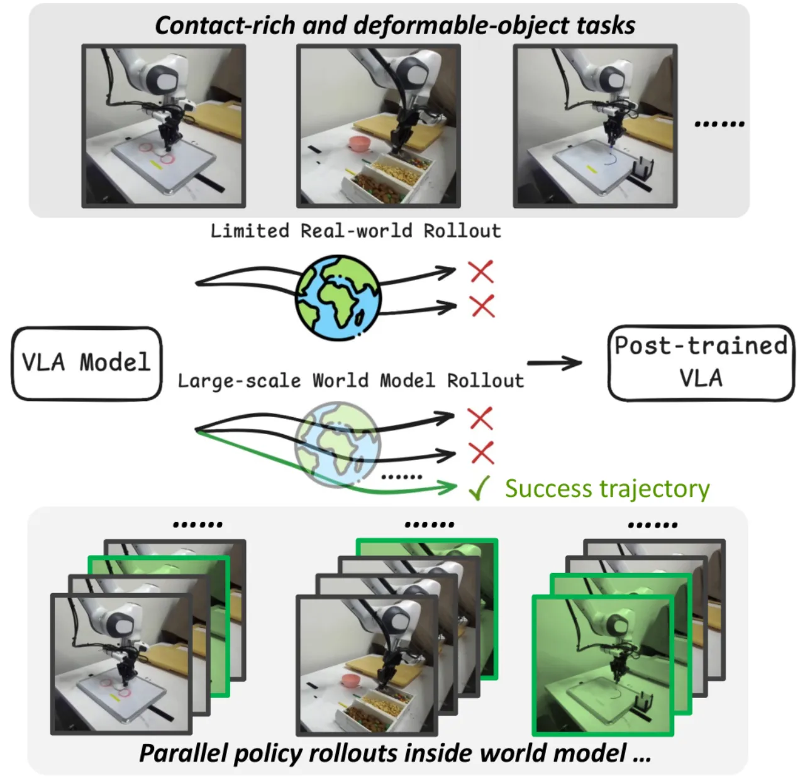
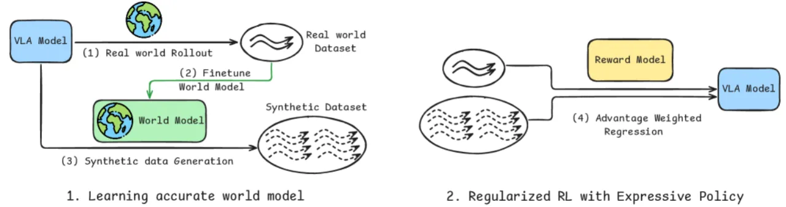
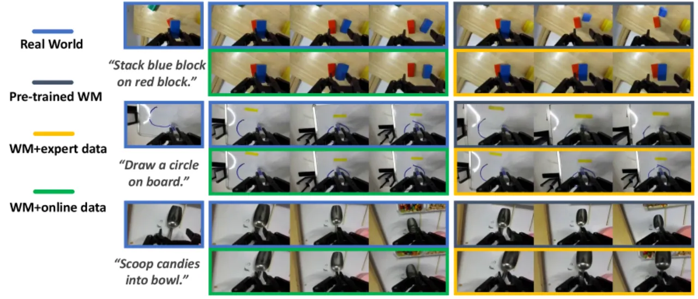
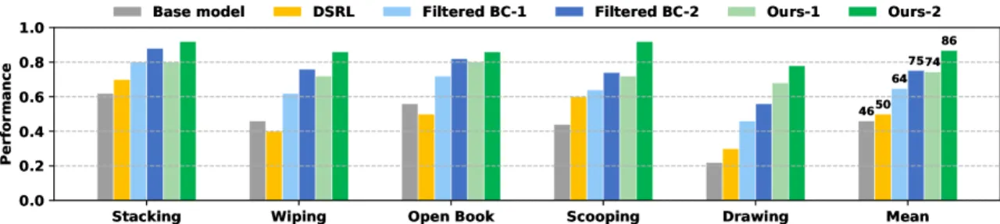
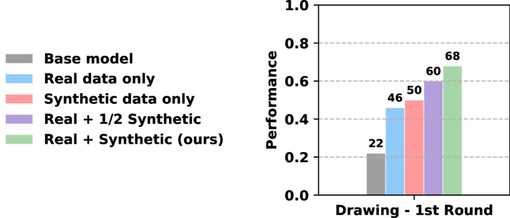

VLAW 提出一种迭代框架：通过真实机器人回滚数据接地预训练世界模型，再让接地后的世界模型生成大量合成轨迹以优化 VLA 策略；两者相互增益，循环迭代，在 DROID 平台五类接触密集任务中平均成功率提升 39.2%。
大规模预训练 VLA 策略（如 π₀.₅）在泛化上表现出色，但在新任务上直接部署时需要大量真实示范或代价高昂的物理回滚才能完成微调。现有方法要么依赖人工重置与监督（成本高），要么在合成数据与真实物理之间存在较大 sim-to-real gap。
"Although the learned world model achieves high fidelity on the downstream tasks from which online data are collected, our current evaluation is limited to five task categories."
世界模型（video generation model）是生成合成机器人数据的理想工具，但预训练世界模型往往缺乏对目标任务物理动态的精确建模——尤其是接触密集型操作（如叠放物体、擦黑板、翻书）。VLAW 的核心洞察是：少量真实回滚数据足以将预训练世界模型接地，使其能忠实模拟目标任务的物理过程；接地后的世界模型又能批量生成高质量合成轨迹来训练 VLA 策略，从而减少对昂贵真实交互的依赖。

VLAW 是一个四步迭代循环：①收集真实回滚轨迹；②用回滚数据微调世界模型（同时与 DROID 示范数据联合训练以防 catastrophic forgetting）；③让 VLA 策略在世界模型中进行 closed-loop 推演，生成合成轨迹并由奖励模型过滤；④用过滤后的合成轨迹以加权 flow-matching 损失更新 VLA 策略。

世界模型以预训练 Ctrl-World（在 DROID 数据集上训练的动作条件视频生成模型）为起点。关键改进在于：在微调时同时使用成功与失败的真实轨迹，并与原始 DROID 数据联合训练，以正则化系数 λ 控制两者比例。这一设计防止模型对合成成功场景过度乐观（over-optimism），保证世界模型能如实模拟任务失败动态，为后续策略优化提供可靠的负样本信号。
VLA 策略（π₀.₅）在接地世界模型中进行 closed-loop 推演：当前观测输入策略，策略输出动作，世界模型生成下一帧观测，依此循环最长 20 秒。推演结束后，Qwen3-VL 奖励模型以成功率阈值对轨迹进行二值过滤。过滤通过的轨迹以加权 flow-matching 损失更新策略参数，成功轨迹获得更高权重。作者指出，这等价于一种正则化强化学习，但完全使用监督学习实现，避免了策略梯度方法的不稳定性。

实验在 DROID 平台（Franka Panda + Robotiq 双指爪）上进行，评估五类接触密集型任务：Stacking（叠放）、Wiping（擦除）、Open Book（翻书）、Scooping（勺取）、Drawing（绘图）。每类任务各进行 50 次评估。基线方法包括：Filtered BC（仅在真实成功轨迹上做监督微调）和 DSRL（在潜在噪声空间做扩散策略优化）。
| 指标 | 预训练（无接地） | +专家数据微调 | +在线回滚（完整接地） |
|---|---|---|---|
| PSNR ↑ | 16.32 | 19.87 | 21.77 |
| SSIM ↑ | 0.634 | 0.748 | 0.784 |
| LPIPS ↓ | 0.347 | 0.189 | 0.136 |
| FID ↓ | 41.03 | 12.76 | 9.58 |
| FVD ↓ | 225.13 | 99.98 | 64.12 |
交互事件混淆矩阵（50 条 clip）：TP=26，FN=4，TN=19，FP=1，显示世界模型对接触事件的识别具有高准确性。
| 方法 | Stacking | Wiping | Open Book | Scooping | Drawing | Mean |
|---|---|---|---|---|---|---|
| Base (π₀.₅) | 0.62 | 0.46 | 0.56 | 0.44 | 0.22 | 0.460 |
| DSRL | 0.70 | 0.40 | 0.50 | 0.60 | 0.30 | 0.500 |
| Filtered BC (Iter 1) | 0.80 | 0.62 | 0.72 | 0.64 | 0.46 | 0.648 |
| Filtered BC (Iter 2) | 0.88 | 0.76 | 0.82 | 0.74 | 0.56 | 0.752 |
| VLAW (Iter 1) | 0.80 | 0.72 | 0.80 | 0.72 | 0.68 | 0.744 |
| VLAW (Iter 2) | 0.92 | 0.86 | 0.86 | 0.92 | 0.78 | 0.868 |


消融结果表明：① 合成数据量越大，策略性能越好；② 在世界模型微调阶段去掉原始 DROID 数据会导致 catastrophic forgetting，使合成轨迹质量下降；③ 策略在线回滚数据对世界模型接地至关重要，仅用专家演示数据无法达到相同精度。
作者明确指出："Although the learned world model achieves high fidelity on the downstream tasks from which online data are collected, our current evaluation is limited to five task categories." 目前仅在 DROID 平台五类任务上验证，对更大规模、更多样化任务集的泛化性尚未得到系统评估。
世界模型在目标任务数据上接地，若 VLA 策略在推演时产生分布外动作，世界模型可能生成失真帧，进而影响合成轨迹质量。论文中对跨任务泛化的世界模型稳定性讨论有限。
虽然每次迭代仅需 50 条真实回滚，但接触密集型任务仍需人工监督和场景重置。与完全无需真实交互的纯仿真方法相比，VLAW 在部署便利性上仍存在一定门槛。
使用 Qwen3-VL 作为奖励模型对合成轨迹做二值过滤，VLM 对复杂接触状态（如勺取成功与否）的判断可能存在误判，错误过滤可能引入噪声训练数据。